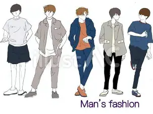

● 小学校
野球に夢中だった原点
小学校2年生から野球を始め、選抜に選ばれるなど日々野球に没頭していました。 休みの日には友人と秘密基地を作ったり、公園で野球やサッカーをしたりと、 外で遊ぶことが多い活発な子どもでした。
早友 隆誠 / Ryusei Hayatomo
日本大学国際関係学部の学生です。
未経験からプログラミング学習を始め、Ruby on Railsを中心に
Web開発・アプリ制作・改善に取り組んできました。
— これまでの歩み —
Ruby / JavaScript / TypeScript / Python / HTML / CSS
Ruby on Rails / Next.js
PostgreSQL / Supabase
Git / GitHub / Vercel / Render / Google Apps Script
OpenAI API / Python Data Analysis / Workflow Automation
現在はRuby on Railsを用いたWeb開発に加え、 Next.js・TypeScript・Supabaseによるフルスタック開発に取り組んでいます。 また、OpenAI APIを活用したAI機能の実装や、 Google Apps Scriptによる業務自動化ツールの開発経験があります。
Java / AWS
— 好きなもの・趣味 —
小学校2年生から続けてきた、自分の原点です。 今でも仲間とプレーしながら、成長と挑戦を楽しんでいます。

日常の中で自分を表現できる手段として大切にしています。 シンプルで洗練されたスタイルを意識しています。
美味しいものを食べる時間が好きです。 人と過ごす時間や、日常の楽しみの一つとして大切にしています。
気分やシーンに合わせて音楽を楽しんでいます。 日常に欠かせない存在です。
知識や考え方を広げるために読書をしています。 新しい視点に触れることを大切にしています。